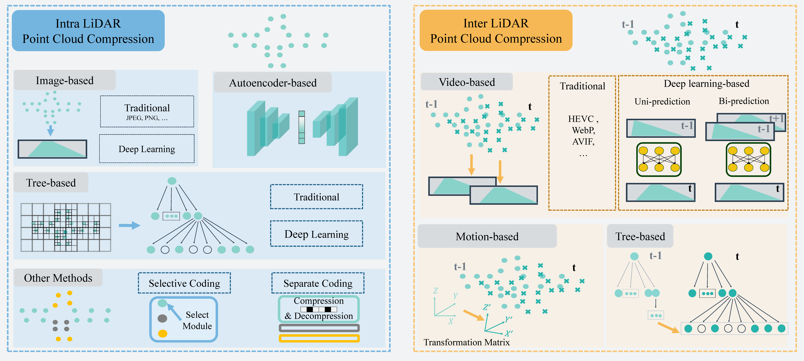

【IJRR 2018】Paris Lille 3D [paper] [data]
【CVPR 2019】 SemanticKITTI[paper] [data]
【CVPR 2020】 nuScenes[paper] [data]
【ICRA 2021】 RELLIS-3D[paper] [data]
【RA-L 2022】Panoptic nuScenes [paper] [data]
【TIV 2023】 V2V4Real[paper] [data]
【CVPR 2012】KITTI [paper] [data]
【CVPR 2019】 Argoverse [paper] [data]
【ICRA 2020】A*3D [paper] [data]
【CVPR 2020】 Waymo Open[paper] [data]
【CoRL 2021】Lyft L5 [paper] [data]
【ITSC 2021】PixSet [paper] [data]
【IJRR 2021】CADC [paper] [data]
【TPAMI 2022】KITTI 360 [paper] [data]

Image-based
【RA-L 2019】A Novel Point Cloud Compression Algorithm Based on Clustering [paper]
【ICRA 2019】Point cloud compression for 3D LiDAR sensor using recurrent neural network with residual blocks [paper] [code]
【TCSVT 2022】Real-time scene-aware LiDAR point cloud compression using semantic prior representation [paper]
【ICRA2022】R-pcc: a baseline for range image-based point cloud compression [paper] [code]
【IV 2022】3D Point Cloud Compression with Recurrent Neural Network and Image Compression Methods [paper] [code]
【CVPR 2022】RIDDLE: LiDAR Data Compression with Range Image Deep Delta Encoding [paper]
Tree-based
【Google’s Software】Draco [code]
【MPEG’s Software】G-PCC [paper] [code]
【ICIP 2018】Intra-frame context-based octree coding for point-cloud geometry [paper]
【CVPR 2020】 OctSqueeze: Octree-structured entropy model for LiDAR compression [paper] [code]
【ICIP 2021】Cylindrical coordinates for LiDAR point cloud compression [paper]
【CVPR2021】VoxelContext-Net: An Octree based Framework for Point Cloud Compression [paper]
【VCIP 2022】Azimuth Adjustment Considering LiDAR Calibration for the Predictive Geometry Compression in G-PCC [paper]
【ECCV 2022】Point Cloud Compression with Sibling Context and Surface Priors [paper] [code]
【TPAMI 2022】Sparse tensor-based multiscale representation for point cloud geometry compression [paper] [code]
【AAAI 2022】OctAttention: Octree-Based Large-Scale Contexts Model for Point Cloud Compression [paper] [code]
【CVPR 2023】Efficient Hierarchical Entropy Model for Learned Point Cloud Compression [paper]
【AAAI 2023】OctFormer: Efficient Octree-Based Transformer for Point Cloud Compression with Local Enhancement [paper]
【TCSVT 2023】Multiscale Latent-Guided Entropy Model for LiDAR Point Cloud Compression [paper]
Autoencoder-based
【RA-L 2019】PCT: Large-scale 3D point cloud representations via graph inception networks with applications to autonomous driving [paper]
【RA-L 2021】Deep compression for dense point cloud maps [paper] [code]
【CVPR 2022】 Density-preserving Deep Point Cloud Compression [paper] [code]
【ICIG 2023】 Patch-Wise LiDAR Point Cloud Geometry Compression Based on Autoencoder [paper] [code]
Other methods
【ICC 2021】Hybrid Point Cloud Semantic Compression for Automotive Sensors: A Performance Evaluation [paper]
【TCSVT 2022】 Real-time scene-aware LiDAR point cloud compression using semantic prior representation [paper]
【TII 2022】 A Task-Driven Scene-Aware LiDAR Point Cloud Coding Framework for Autonomous Vehicles [paper]
【ECCV 2022】Point Cloud Compression with Range Image-Based Entropy Model for Autonomous Driving [paper]
【TCSVT 2022】Layer-wise geometry aggregation framework for lossless LiDAR point cloud compression [paper]
【EDBT 2023】Density-Based Geometry Compression for LiDAR Point Clouds [paper][code]
Video-based
【IEEE Access 2019】Real-Time streaming point cloud compression for 3D LiDAR sensor using U-Net [paper]
【RA-L 2020】A Novel Coding Architecture for LiDAR Point Cloud Sequence [paper]
【MM 2020】An Advanced LiDAR Point Cloud Sequence Coding Scheme for Autonomous Driving [paper]
【TBC 2022】Real-Time LiDAR Point Cloud Compression Using Bi-Directional Prediction and Range-Adaptive Floating-Point Coding [paper]
【TITS 2022】 A Novel Coding Architecture for Multi-Line LiDAR Point Clouds Based on Clustering and Convolutional LSTM Network [paper] [code]
【ICASSP 2023】BIRD-PCC: Bi-Directional Range Image-Based Deep LiDAR Point Cloud Compression [paper]
Tree-based
【NIPS 2020】MuSCLE:multi sweep compression of LiDAR using deep entropy models [paper]
【NIPS 2021】VoxelContext-Net: An Octree based Framework for Point Cloud Compression [paper]
Motion-based
【IV 2017】Continuous point cloud data compression using SLAM based prediction [paper]
【TITS 2019】Motion analysis and performance improved method for 3D LiDAR sensor data compression [paper]
【IROS 2020】Real-Time Spatio-Temporal LiDAR Point Cloud Compression [paper] [code]
【TASE 2021】A Novel Coding Scheme for Large-Scale Point Cloud Sequences Based on Clustering and Registration [paper]
【ICMEW 2021】An Improved Coarse-To-Fine Motion Estimation Scheme For LiDAR Point Cloud Geometry Compression [paper]
【IEEE Access 2022】LiDAR point cloud compression by vertically placed objects based on global motion prediction [paper]